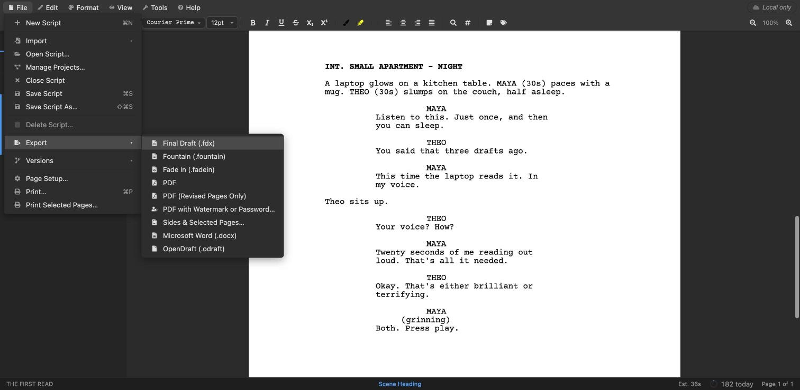

The short answer
- Go to open-draft.com. It’s free, with no install and no sign-up.
- Choose File → Import → Script File and pick the PDF.
- Check the Import Preview, fix any misread lines, and click Import.
- Choose File → Export → Final Draft (.fdx).
You get an editable .fdx file that opens in Final Draft, with scene headings, action, characters and dialogue as real screenplay elements rather than lines of text. The rest of this guide shows each step and explains what the conversion can and can’t recover.
Why converting a PDF screenplay is tricky
A Final Draft file knows that a line is a character name or a piece of dialogue. A PDF doesn’t. It’s just text placed at positions on a page. To turn it back into a screenplay, a converter has to work out what each line is from where it sits, the way you do when you read a script: character names are indented about halfway across, dialogue a bit less, parentheticals in between.
That’s what OpenDraft does. Because no automatic reading is perfect for every script, it then shows you its reading so you can correct it before anything is imported.
1Open the PDF in OpenDraft
Go to open-draft.com, choose File → Import → Script File and select the PDF. The same menu opens Final Draft, Fade In, Fountain, Highland, WriterDuet and Celtx files.
2Check the Import Preview
Before anything changes, OpenDraft shows every line of the PDF with the element it was read as, plus the scene, page and indent it came from.

If lines were misread, they’re usually misread together, for example every character name read as centred action. So you can fix them in bulk:
- Tick or click a misread line. Shift-click selects a range.
- Same type selects every line read as the same element. Same indent selects every line that sat at the same position on the page, which is usually exactly the group that went wrong together.
- Choose the right element from Set type, or press 1–8.
Then click Import. Nothing in the open script changes until you do, and Cancel leaves it as it was.
3Export to Final Draft
The script opens in the editor as a fully formatted screenplay you can edit. Choose File → Export → Final Draft (.fdx) to download the .fdx file.

The same menu exports Word, Fountain and Fade In, so a PDF can also become a Word document, or a script you keep writing in OpenDraft.
What the conversion recovers
From a text-based screenplay PDF, OpenDraft brings back:
- scene headings, action, character names, parentheticals, dialogue, transitions and shots
- scene numbers printed in the margins, kept on their headings, including production numbers like 12A
- the title page: title, credit, author, contact and draft
- dual dialogue
- speeches split across a page, joined back together without the (MORE) and (CONT’D)
Page numbers, headers, CONTINUED lines, revision asterisks and watermarks are left out, because they belong to the printed page, not the script. Bold, italics and revision colours aren’t read back from a PDF.
We tested this with a one-scene screenplay PDF. Every line came back as the right element, and the exported .fdx had the scene heading, all seven character cues and speeches, the parenthetical, both action lines and the title page.
Two kinds of PDF that won’t convert
- Scanned scripts. A scan is a picture of pages with no text in it. If you can’t select the words in your PDF viewer, run it through OCR (text recognition) first, then import the result.
- Password-protected PDFs. Open the file in a PDF viewer, save a copy without the password, and import that.
Is it safe? Your script isn’t uploaded
Online converters usually upload your file to their server. OpenDraft reads the PDF and builds the Final Draft file inside your browser, on your own computer. We checked the browser’s network traffic while importing a PDF: the only request was the browser loading OpenDraft’s own PDF-reading component. The script itself went nowhere.
To keep it that way, don’t sign in or choose Save Script; the badge in the corner says Local only. On a shared computer, use a private window. For more on this, see how OpenDraft converts scripts without uploading them.
Questions
Is there a free PDF to FDX converter?
Yes. OpenDraft converts a screenplay PDF to Final Draft’s .fdx format for free, in the browser, with no account and no watermark.
Will the converted script match the PDF exactly?
The text and the screenplay elements will, once you’ve checked the Import Preview. Formatting that only exists on the printed page, such as bold, italics and revision colours, doesn’t come back, and page breaks are recalculated in Final Draft.
Can I convert a PDF screenplay to Word instead?
Yes. After importing, choose File → Export → Microsoft Word (.docx). See also converting Final Draft to PDF or Word.
Do I need Final Draft to do this?
No. You only need Final Draft to open the .fdx afterwards, and you don’t need it even then: the free OpenDraft app opens and saves .fdx files directly.